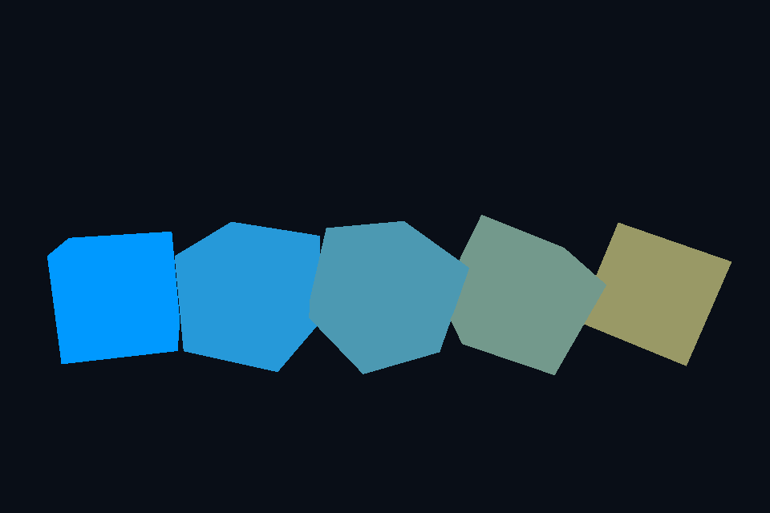

第 28 课：UBO 与 std140
本课独立工程与关键注释
main.cpp · 本地辅助实现 · 本课着色器 · CMakeLists.txt
本目录拥有完整课程源码、资源与依赖配方。关键步骤含中文注释，不链接其他课的课程实现。可将整个目录复制到其他位置，用以下命令单独构建和检查；第三方依赖首次配置需要联网或提供缓存。
cmake -S . -B build -A x64
cmake --build build --config Debug --parallel 4
ctest --test-dir build -C Debug --output-on-failure
课程首页 · 上一课 · 下一课
目标与运行
cmake --preset opengl
cmake --build --preset opengl-debug --target 28_ubo --parallel 4
.\OpenGL\build\bin\Debug\28_ubo.exe
预期画面：五个旋转方块共享相机矩阵，并各自使用不同颜色和模型矩阵。
相机：W/A/S/D 移动，Q/E 升降，按住右键转向，Esc 退出。
代码阅读顺序
ubo.vert 的 CameraBlock → main.cpp 的 glUniformBlockBinding/BufferSubData
从本课 main.cpp 进入；公共工具在 common，GLSL 在 shaders。先画出每一遍读什么、写什么，再逐个展开辅助类。
原理与实现
多个 shader 常共享相机矩阵。UBO 把这些数据放进一个缓冲，以 binding point 让多个程序引用，不再对每个程序逐个上传相同 mat4。本课为了突出数据路径只使用一个程序、五个物体；可扩展第二程序验证共享。
GLSL 330 用 layout(std140) uniform CameraBlock 声明布局，然后 CPU 查 block index，glUniformBlockBinding 将其映射到 binding=0，glBindBufferBase 把缓冲接到这个 binding。不要把 program 的 block index 当成全局 binding point；二者不是同一个编号。
std140 下两个 mat4 各占 64 字节，projection 在偏移 0，view 在偏移 64，总计 128。vec3、数组和结构体有额外对齐规则，不能直接拿随意的 C++ struct memcpy。更通用代码应按规范对齐或查询 offset/stride。
本课先分配一次 GL_DYNAMIC_DRAW，再每帧 glBufferSubData 更新相机数据。model 仍按对象作为普通 uniform 上传，因为它不在共享相机块内。UBO 数量和块大小有设备上限，可查询 GL_MAX_UNIFORM_BUFFER_BINDINGS 与 GL_MAX_UNIFORM_BLOCK_SIZE。
修改练习
加一个不同片段 shader，共享 binding=0；在 block 中加入眼睛位置并明确 16 字节对齐。
修改后重新执行 cmake --build --preset opengl-debug --target 28_ubo --parallel 4。GLSL、模型、图片会复制到程序旁的 shaders/assets 目录。源文件应修改教程根目录下的版本，运行目录的副本会被下一次构建覆盖。
自测与参考答案
glUniformBlockBinding 和 glBindBufferBase 分别连接什么？
前者连接程序内的块与绑定点，后者连接绑定点与实际缓冲对象。
检查与排错
运行 28_ubo.exe --smoke 可执行确定时间的四帧渲染检查。重要技术开关还可用 --smoke --variant --capture 与默认抓图对比。共享工具会检查 GL 错误、非背景像素和图像动态范围，但这不能代替人工核对技术含义。参见 进阶排错。
参考截图
以下为课程自带素材、固定时间 1 秒时的实际渲染；你的相机与操作改变后画面会不同。

深入学习：数据、接口与执行
CameraBlock 中 projection/view 是两个 mat4，以 std140 约定与 CPU 写入偏移匹配。model 仍每对象更新，说明共享帧数据与逐 draw 数据可以共存。
配套精讲：三 API 对照 · 常量与资源绑定。先读概念与参数选择，再返回本课实现核对，不必一次展开所有公共类。
本课的真实源码切片
来自 OpenGL/lessons/28_ubo/main.cpp，第 7—32 行；这是现有实现的局部摘录，末尾可能处于函数中间，不是可单独编译的完整程序。
int main(int argc, char** argv) try {
// 先创建上下文；它必须比 shader、纹理和网格活得更久。
App app(argc, argv, "28_ubo - OpenGL Course");
// shader 路径指向本课自己的文件；属性、uniform 与下方 C++ 设置对应。
Shader shader(app, "ubo.vert", "solid.frag");
Mesh box(cube());
Camera camera;
glEnable(GL_DEPTH_TEST);
GLuint buffer;
glGenBuffers(1, &buffer);
glBindBuffer(GL_UNIFORM_BUFFER, buffer);
glBufferData(GL_UNIFORM_BUFFER, 2 * sizeof(glm::mat4), nullptr, GL_DYNAMIC_DRAW);
GLuint block = glGetUniformBlockIndex(shader.id, "CameraBlock");
if (block == GL_INVALID_INDEX)
throw std::runtime_error("Missing uniform block");
glUniformBlockBinding(shader.id, block, 0);
glBindBufferBase(GL_UNIFORM_BUFFER, 0, buffer);
// 每帧处理输入并绘制；GPU 对象在退出循环后按 C++ 作用域逆序释放。
while (app.begin()) {
camera.update(app);
app.clear();
auto projection = camera.projection(app), view = camera.view();
glBindBuffer(GL_UNIFORM_BUFFER, buffer);
glBufferSubData(GL_UNIFORM_BUFFER, 0, sizeof(glm::mat4), glm::value_ptr(projection));
glBufferSubData(
GL_UNIFORM_BUFFER, sizeof(glm::mat4), sizeof(glm::mat4), glm::value_ptr(view));
同主题跨 API 导航
以下是同主题参考；场景、功能完成度和版本基线可能不同，具体边界见对照章节。
先预测，再验证
改为 glBindBufferRange 后能随意给任意字节偏移吗？
参考推导：不能。除布局外还要满足 uniform buffer offset alignment；按设备限制对齐，不只看 sizeof。
在一次实验中只改一个因素，记录预测、实际画面/日志和原因。检查已有 smoke 是否仍通过；图形调试器里再核对本次 draw 的实际输入/输出，不能仅凭进程正常退出下结论。